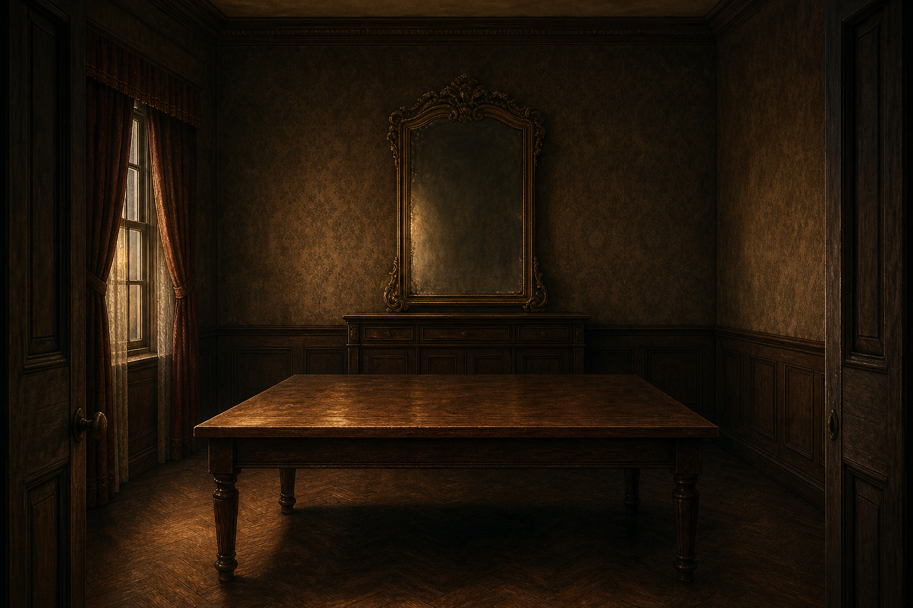
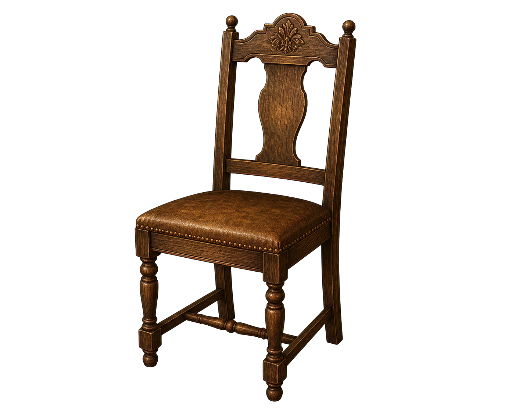
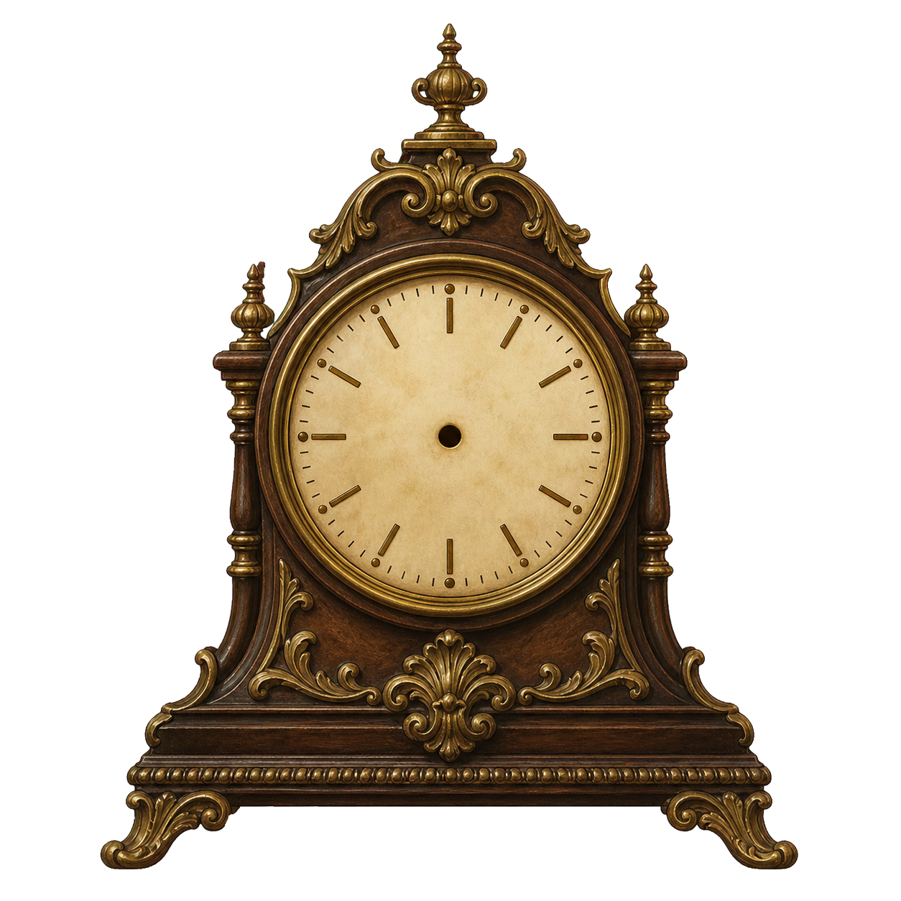
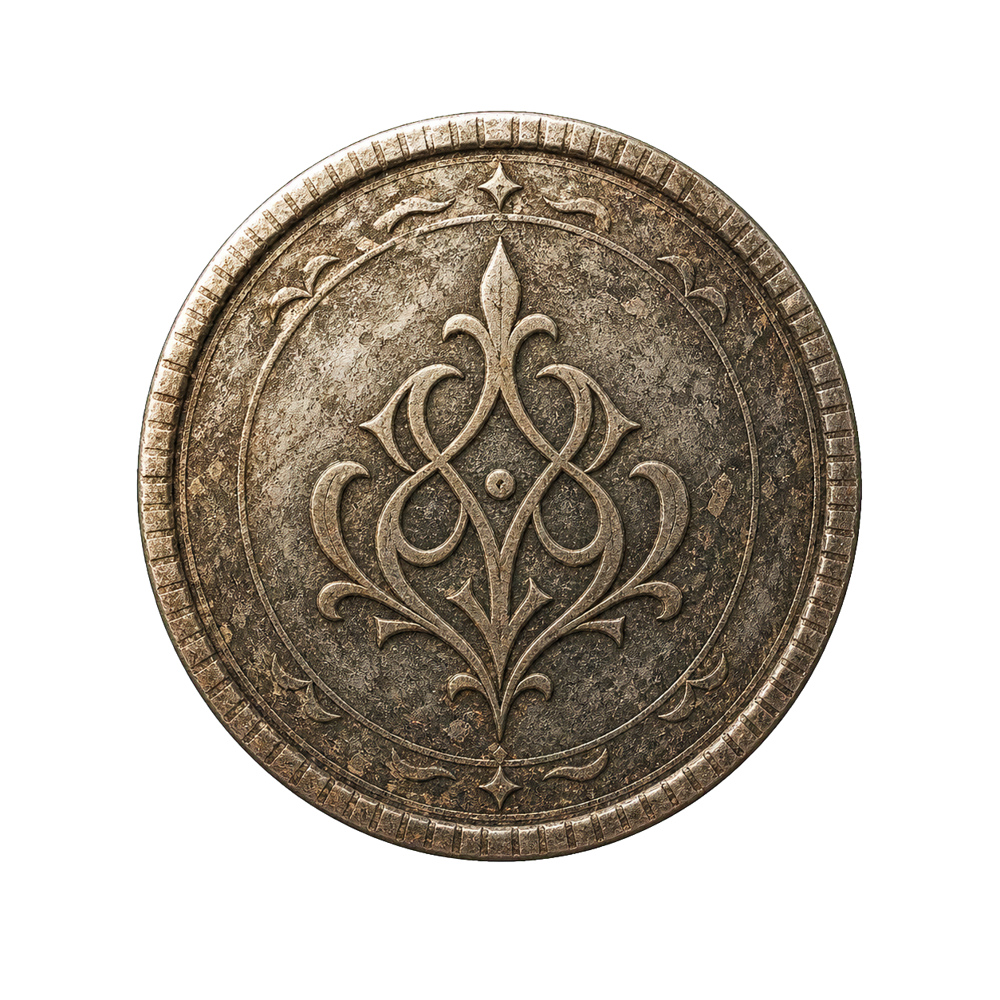
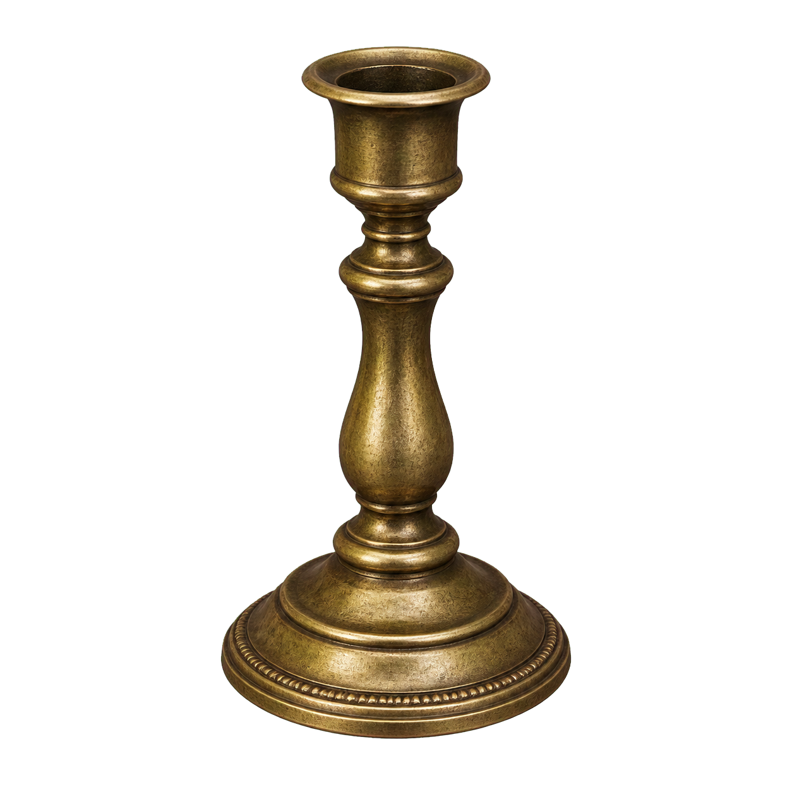
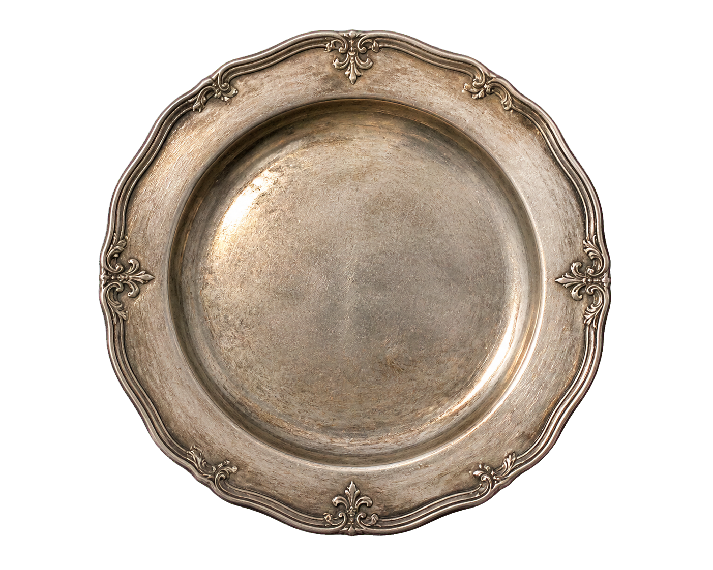

Assets Review
Generated Assets

bg-dining.png1536x1024 background
chair.pngtransparent sprite
clock-face.pngtransparent sprite
coin.pngtransparent sprite
candelabra.pngtransparent sprite
plate.pngtransparent spriteenvelope.pngtransparent sprite